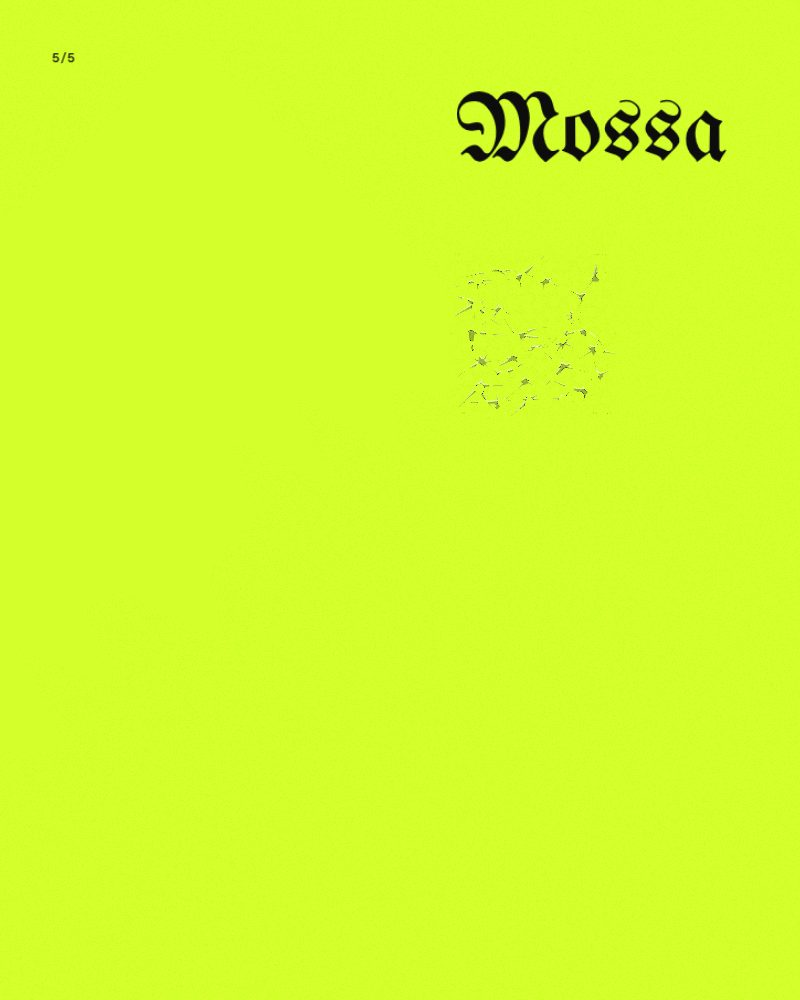

Mossa

1/5 · DONNA
Nelle cose che ho letto, la donna cede alla passione. Metto insieme due cose: la donna cede alla passione; il principe cede alla comunità.

2/5 · La donna cede alla passione

3/5 · Il principe cede alla comunità

4/5 · Mossa:PCUBQ
Metto in fila: la donna cede alla passione; il principe cede alla comunità.

5/5 · Mossa
Mossa:PCUBQ
che cosa lega la donna al principe?